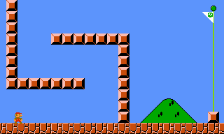

Процесс ТАСинга
Суть ТАСинга – в стремлении к абсолютному совершенству. ТАСеры видят в прохождении видеоигр не просто развлечение, а сложную и интересную оптимизационную задачу.
Людям нравится решать творческие задачи, так как это позволяет им выразить свою индивидуальность и усовершенствовать различные навыки. Однако в сложных задачах требуется проявлять не только изобретательность, но и методичность. В данном Руководстве описывается сухой и методичный аспект ТАСинга, а изобретательность вы должны будете проявить самостоятельно в реальной рабочей обстановке.
В общем случае, чтобы создать совершенное (или очень близкое к идеалу) прохождение игры, нужно сначала записать несовершенное прохождение, а затем заняться последовательным улучшением его отдельно взятых частей. Когда каждый фрагмент мувика является идеальным, можно говорить об идеальности всего ТАСа.
Концентрация усилий на небольших участках мувика – это ключ к успеху. Каждый рабочий участок должен быть достаточно большим, чтобы представлять из себя адекватную подзадачу, и при этом достаточно маленьким, чтобы эту задачу было легко решать.
Без такой структуризации эффективный и комфортный ТАСинг невозможен. Слишком много факторов влияют на конечный результат игры, и какие-то из этих факторов дополняются или противоречат друг другу. Памяти человека не хватает, чтобы удержать в голове и просчитать все взаимосвязи игровых факторов на большом отрезке прохождения. Так что во время длительных игровых сессий у ТАСера, как и у обычного игрока, возникает естественный соблазн взять первые попавшиеся наблюдения в качестве основы для формирования решений. Обычному игроку такая беспечность сходит с рук, но ТАСер в итоге получит далёкое от идеала прохождение.
Поэтому в реальном ТАСинге участки должны быть маленькими. Намного меньше, чем размеры одного уровня типовой видеоигры. Весь процесс ТАСинга можно представить таким образом: человек смотрит запись своего незавершённого прохождения игры, намечает небольшой кусочек мувика и бросает все силы на его улучшение, затем намечает другой кусочек, и так до конца игры.
Конечно, это неполная картина, ведь помимо непосредственно обработки мувика ТАСеры ещё занимаются исследованиями и экспериментами с игрой (для выявления скрытых факторов), и многим другим. Но это уже выходит за рамки данного Курса.
Умение выбирать адекватные участки приходит с опытом. Многие ТАСеры даже не задумываются, чем они руководствуются, когда спонтанно акцентируют своё внимание на некоем участке игры, подсознательно ограничивая начало и конец текущего этапа работ. Некоторые полагают, что просто записывают мувик кадр за кадром подряд, но если посмотреть на это со стороны, можно заметить, что повторяющиеся перезаписи происходят в рамках окна размером в 20-200 кадров, и это окно передвигается вперёд по мувику не плавно, а прыжками (конец предыдущего участка зачастую становится началом следующего). Можете посмотреть видеозаписи ТАСинга вживую, и вы заметите определённую закономерность в обращении с сэйвами.
Сейчас мы попробуем проанализировать это поведение, чтобы научиться осмысленнно определять границы текущего участка. А потом уже практика ТАСинга научит вас делать это машинально.
Правильно выбранный участок (подзадача) должен давать ТАСеру чёткую непротиворечивую цель и простые средства для её достижения.
Цель прохождения участка – это обычно достижение определённого игрового события. Например, целью прохождения всей игры является появление на экране надписи "THE END". Целью прохождения одного уровня может быть событие "увеличилось значение счётчика уровней в оперативной памяти приставки" или же "потемнел экран в конце текущего уровня". А целью небольшого участка может быть даже просто событие типа "персонаж благополучно приземлился по ту сторону ямы". Эти промежуточные цели определяются контекстом.
Исходя из цели ТАСер формулирует в уме критерий оптимальности – правило, по которому он сможет сравнивать любые два прохождения текущего участка игры. При ТАСинге недостаточно просто достигнуть цели, нужно перепробовать множество разных подходов к её достижению и в итоге выбрать из них самый лучший. Например, в спидране лучшим подходом к прохождению участка обычно считается тот, в котором целевое событие наступает раньше. То есть, если в первом подходе к прохождению участка целевое событие достигается на кадре 350, а во втором – на кадре 340, то второй подход лучше первого, и в финальном мувике должен остаться именно он.
Средств достижения целевого события у игрока очень много. Теоретически, любой аспект геймплея (в том числе не учтённый разработчиками) может каким-то образом помочь или помешать прогрессу. Поэтому, чтобы не запутаться в этом смутном многообразии возможностей, надо рассматривать все игровые аспекты в виде факторов оптимальности.

Фактор оптимальности – это игровой аспект, который напрямую влияет на оптимальность прохождения участка. Слово "напрямую" подразумевает монотонную зависимость результата от степени применения фактора. Например, на этой картинке не существует монотонной зависимости между расстоянием до финиша и тем, как долго игрок держит кнопку Вправо. Ведь нажатие этой кнопки то помогает Марио приблизиться к финишу, то мешает, в зависимости от его текущего положения.
Когда люди воспринимают такой участок целиком, им сложнее догадаться, в какой момент лучше всего отпускать кнопку R, когда нажимать L и т.д. Чтобы упростить понимание комплексных зависимостей (и таким образом выявить факторы), подобные участки следует разбивать на несколько подучастков.
При правильной постановке вопроса обычно сразу отпадает множество неактуальных возможностей. Например, обычный игрок может переждать, пока сильный враг сам уйдёт с дороги, но в спидране такая тактика не рассматривается.
В результате у ТАСера остаётся ограниченный набор полезных действий и игровых индикаторов, за которыми требуется следить во время шлифовки одного участка. И чем меньше участок, тем ограниченнее и понятнее этот набор, а значит, тем легче перебрать сочетания факторов и найти идеальную последовательность действий.
С другой стороны, чем меньше участок, тем менее его цель пересекается с финальной целью ТАСа. Финальная цель у ТАСера одна – сделать идеальное прохождение, например, самое быстрое в мире (то есть счётчик кадров в момент окончания мувика должен иметь минимально возможное значение). Но в рамках каждого конкретного участка цель может быть совершенно другой, иногда даже противоположной (например, продержаться как можно дольше в бонус-уровне, за счёт чего потом будет сэкономлено время в другом месте). Поэтому для совсем мелких участков критерий оптимальности обычно не играет роли, и прохождение такого микро-участка оценивается только в составе прохождения полноценного участка.
Например, если во время перепрыгивания ямы вам необходимо отстреливаться от врагов, в принципе, можно рассматривать каждую выпущенную пулю в виде отдельного подучастка (чтобы изолировать и обдумать такие факторы как "таймер перезарядки", "максимум 3 пули на экране" и т.д.). Но сравнивать потом нужно будет именно версии перепрыгивания через яму. Даже если в первом подходе к перепрыгиванию (который заканчивается на кадре 350) вы подстрелили двух врагов, а во втором (заканчивается на 340) застрелили только одного, выбирать следует второй подход, так как критерий оптимальности составного участка более соответствует финальной цели спидрана.
Во время ТАСинга приходится поддерживать оптимальный баланс между необходимостью уменьшать участки ради поиска факторов и необходимостью увеличивать их ради адекватности критерия. Это умение приходит с опытом, так что можно просто положиться на интуицию и не заморачиваться.
Возьмём пример со слишком большим участком. В спидране Super Mario Bros требуется максимально быстро добраться от начала до конца World 1-1, то есть нужно максимизировать координату X персонажа, который перемещается слева направо. Допустим, в начале уровня координата Марио равна нулю, а в конце уровня равна тысяче. С помощью кнопок джойстика можно по-разному влиять на эту координату. Если в качестве оптимизируемого участка выбрать весь уровень от момента с X = 0 до события X = 1000, то у нас есть однозначный критерий оптимальности (самым лучшим подходом будет мувик с минимальным значением счётчика кадров на момент X >= 1000), но нет однозначных факторов. Как именно нужно нажимать кнопки, чтобы получить X = 1000 за наименьшее количество кадров? Можно применить логику и интуицию обычного игрока. При нажатии кнопки R координата X обычно возрастает, а при нажатии L убывает. Самое очевидное решение – зажать кнопку R и узнать, через сколько кадров значение X дорастёт до тысячи. При тестировании такого подхода в эмуляторе оказывается, что Марио упирается в препятствия, и координата X не растёт, хотя кнопка R зажата. Тем самым обнаруживается новый фактор – необходимость перепрыгивать препятствия и ямы. В результате применения кнопки A Марио в итоге достигает момента с X = 1000, при этом по критерию оптимальности можно отсеять все подходы, где нажатия кнопки A были несвоевременными (например, там, где Марио спотыкался о края труб, счётчик кадров в конце участка был больше). Тут игрок (точнее, ТАСер, застрявший в образе мышления игрока) может посчитать, что учёл все факторы оптимальности, и что участок пройден идеально. Однако это не так. В Super Mario Bros непростой физический движок. На координату X влияет текущее значение скорости, а на значение скорости влияет ускорение. На ускорение влияет кнопка B, буксование, направление и положение Марио в воздухе или на земле. Также существуют трубы-телепорты и полезные баги игры, вроде "flagpole glitch" и т.д. Много всего. А согласно некоторым исследованиям, в рабочей памяти человека может одновременно храниться лишь около 7 объектов, поэтому часть факторов непременно ускользает от вас во время редактирования Ввода на большом участке. Необходимо уменьшить участок до масштаба, при котором факторы проявляются по отдельности, или хотя бы небольшой группой. Например, если сосредоточиться на участке от X = 0 до X = 100, критерий оптимальности останется тем же. Зато здесь уже становится заметно, что в первой половине участка Марио бежит медленнее, чем во второй, причём во второй половине он бежит всё время с одинаковой скоростью, которую можно принять за максимальную. Таким образом проявляется фактор ускорения, ТАСер добавляет эту ячейку RAM в просмотрщик памяти и начинает думать, как бы на повлиять на ускорение. Благодаря экспериментам с поворотами и прыжками он может обнаружить новые факторы. В результате, по текущему критерию оптимальности к моменту с X = 100 быстрее приходит тот подход, где ТАСер в начале уровня создал сложную комбинацию из нажатий и отпусканий кнопок R, L, B и A, а не просто зажал R и B. И даже если новое прохождение участка быстрее старого всего на несколько кадров, оно намного ближе к совершенству. |
Теперь рассмотрим другую крайность. Когда участок слишком маленький, критерий его оптимальности может противоречить финальной цели ТАСа. Во-первых, если в SMB увлечься максимизацией скорости и ускорения в равных промежутках между каждой следующей сотней пикселей, можно забыть про трубу, которая сокращает путь к концу уровня. Ведь остановка и ныряние в трубу сбрасывают значение скорости в ноль, что противоречит цели текущего участка. В краткосрочном периоде фактор ныряния невыгоден для спидраннера, а про его долгосрочную выгоду вы можете случайно забыть, когда занимаетесь однотипными действиями.
В данном случае участок был выбран недальновидно, и, как следствие, появился неверный критерий оптимальности ("на момент X = 200 счётчик кадров должен быть минимален"). Здесь концом участка должен быть момент, когда любое нажатие Вниз запускает анимацию ныряния Нужно было определить концом участка момент ныряния в трубу. Конечно, такие ошибки обычно замечаются при повторном просмотре готового мувика на свежую голову, но иногда ситуация менее очевидна, и обнаруживается только после опубликования. Во-вторых, в том же SMB после ныряния в трубу (мир 1-1) нужно добраться до выхода, находящегося справа. Казалось бы, требуется с первых мгновений начинать максимизацию скорости. Однако, как видно на картинке, в течение первой дюжины кадров правильнее всего будет зажать кнопку L, а не R, чтобы сначала приземлиться немного поодаль от стенки, через которую требуется перепрыгнуть. Если сразу зажать R, то Марио приземлится вплотную перед стенкой, и ему придётся прыгать вертикально вверх, обнулив всю набранную скорость. Эта особенность вовсе не так очевидна, если в качестве оптимизируемого участка вы выбираете промежуток от появления Марио до приземления. На таком маленьком участке критерий оптимальности наведёт вас на неверную последовательность кнопок. Здесь нужно выбирать участок от первого кадра появления Марио до момента преодоления угла стенки. К сожалению, даже опытные ТАСеры не всегда ставят правильные ограничения сразу. Иногда приходится передумывать и переделывать, выбрасывать результаты проделанных тестов и менять масштаб участка, заново проходить почти тот же самый момент в игре. |
Как вы могли заметить, данный документ избегает измерять участки реальным количеством кадров мувика. Потому что конкретные размеры участка сильно различаются как от игры к игре, так и от этапа к этапу. На некоторых участках игры так мало возможностей, что они могут длиться более тысячи кадров, и их всё равно будет легко проходить и перепроходить. Кстати, некоторые участки настолько просты, что их даже перепроходить не требуется, так как любое успешное прохождение является оптимальным (например, просмотр непропускаемых заставок между уровнями). А другие стадии игры, наоборот, перенасыщены событиями и факторами, и в них приходится попотеть даже над дюжиной кадров.
Опытные ТАСеры подходят индивидуально к каждому следующему участку (хоть и не задумываются об этом слишком долго). Выбирать следующий участок по тому же принципу, что и предыдущий – плохая идея, это срабатывает только в очень однообразных играх.
Если хочется, можно ограничивать конец текущего участка неким фиксированным номером кадра (например, ставить себе цель максимизировать координату X на момент счётчик кадров = 200). Но обычно удобнее ассоциировать конец участка с каким-нибудь мелким рубежом в игре (преодоление ловушки или победа над очередным врагом) – тогда сама цель будет подсказывать вам базовые средства для её достижения. Ведь задача типа "взять цветок максимально быстро" звучит гораздо понятнее (для игрока), чем задача "на кадр номер 300 быть максимально близко к цветку".
В подавляющем большинстве видеоигр игровой процесс делится на "комнаты", "волны врагов" и "ловушки", между которыми обязательно присутствуют краткие периоды расслабления. Даже в играх со скроллингом и свободным исследованием мира дизайн уровней всегда таков, что можно выделить напряжённые моменты и наполняющие промежутки между ними. Дело в том, что дизайнеры игр тоже структурируют задачу игрока на подзадачи, и в ряде случаев ТАСер даже может позаимствовать заготовленное разбиение. Главное, не забывать его критически оценивать и при необходимости доразбивать на более мелкие подучастки. Впрочем, это дробление произойдёт естественным образом в процессе обработки Ввода на слишком большом участке. Так что далеко не всегда ТАСинг требует напряжённых мозговых усилий. Будучи умелым и сообразительным, можно в большинстве случаев просто плыть по течению и получать удовольствие от ТАСинга, не уступающее фану традиционных видеоигр.
Всё это можно сравнить с тем, как писатели разбивают книгу на главы (уровни игры), а главы – на параграфы и предложения (участки) для удобства чтения и постижения авторского замысла. Простой читатель (игрок) довольствуется авторским разбиением, но литературному критику (ТАСеру) необходимо уметь "читать между строк", разбивая текст по своему разумению.
Например, в Super Mario Bros между каждой группой врагов есть спокойное пространство, на котором не требуется особое мастерство, его можно беззаботно пробежать или пропрыгать, зажав Вправо (подразумевается, что Марио уже давно разогнался до максимальной скорости). Для идеального прохождения таких моментов не требуются инструменты ТАСинга. Эти промежутки очень хорошо подходят в качестве целей – если обозначить здесь конец участка, то критерий его оптимальности наверняка не будет противоречить финальной цели ТАСа. И обычно эти моменты чередуются достаточно часто, чтобы полученный между ними участок был приемлемой величины.
Разделение ТАСа на участки существовало всегда, но Тасэдитор позволяет сделать этот процесс более наглядным. Здесь вы можете отметить начало и конец любого участка с помощью Маркеров или Закладок. Благодаря видимым границам вы не будете отвлекаться на соседний Ввод при шлифовке участка и сможете сосредоточиться на анализе только ближайших факторов.
Кадр начала участка обычно выбирается при просмотре пробного прохождения текущего участка. Во время записи и просмотра такого прохождения вы уже выделяете в уме один или два ключевых фактора оптимальности. Поэтому логично сделать началом участка тот момент, начиная с которого эти факторы вступают в действие или резко изменяют свой характер. Так, например, в начале каждого уровня начинается новый участок, потому что игроку возвращается возможность двигаться вперёд (после окончания заставки между уровнями). Поэтому в начале каждого уровня имеет смысл ставить Маркер или Закладку, обозначив не только границу уровня, но и начало текущего рабочего участка.
А если в процессе оптимизации обнаружатся факторы, которые вступают в действие раньше, чем начинается текущий участок, выбранные границы участка всегда можно изменить, либо разбить участок надвое.
Кадр конца текущего участка более подвижен, чем кадр начала. Определившись с целью (например, довести координату X до значения 50) можно отметить конец участка, установив второй Маркер/Закладку на кадре, где текущее неидеальное прохождение достигает этой цели. Затем с помощью шлифовки Ввода мы постараемся достичь той же цели (X = 50) на более ранний кадр. И если в ходе редактирования и тестов Ввода обнаружится, что цель действительно можно достигнуть раньше, необходимо будет передвинуть замыкающий Маркер/Закладку выше (на улучшенный конец участка). После этого, пока чувствуется потенциал к дальнейшему улучшению, нужно продолжать тестирование других подходов в поисках ещё лучшего. В традиционном методе ТАСинга именно так постепенно передвигается вверх главная Закладка (хранящая лучшее на данный момент прохождение участка).
В принципе, иногда вы можете дать волю своей лени и не отмечать конец участка, а просто держать цель в уме и примерно помнить, на каком кадре проявляется целевое событие в лучшем случае. Это поведение имеет смысл, когда участок очень прост, и вы не планируете его многократно переделывать.
Более того, в большинстве игр-платформеров, где у персонажа фиксированная скорость бега, многие участки уже с первого раза проходятся оптимально (достаточно зажать Вправо и перепрыгивать простенькие препятствия). Так что, если вы не видите ни одной очевидной ошибки и не собираетесь искать скрытые недостатки, логично также пропускать оформление участка и сразу переходить к следующему. Для новичка такие простые игры подходят лучше всего, ведь их ТАСинг очень похож на казуальное прохождение игр с сэйвами (когда исправляются только самые очевидные ошибки, вроде падения в яму, а некритичные шероховатости игнорируются).
Однако в сложных ТАСах, где голова заполнена обдумыванием множества факторов оптимальности, лучше не торопиться. Чтобы мыслительный процесс был более отчётливым, нужно чётко осознавать границы текущего участка. Поэтому отмечайте начало любого сложного участка Маркером, а конец отмечайте Закладкой из одного и того же слота, пересохраняя её при каждом улучшении участка. В сложных ТАСах улучшение участка – это большое достижение, так что слишком часто изменять отметку конца участка вам не придётся.
Когда появляется уверенность, что найдено идеальное решение участка, надо переходить к следующему участку. Не нужно просто так удалять старые Маркеры, они могут пригодиться в будущем, когда вы усомнитесь в идеальности тех или иных решений (например, найдя новый трюк) и захотите отредактировать Ввод в ранее пройденных уровнях. Скорее всего, логика разбиения останется той же даже после появлении нового фактора (нового трюка).
Также, если посреди процесса оптимизации у вас появляется уверенность, что найдена наилучшая последовательность Ввода для первой половины (или трети) участка, имеет смысл разбить участок надвое и заняться только оставшимся вторым. Часто такие ситуации возникают, когда изначально взят слишком большой участок, и только при редактировании проявились логические подучастки в его составе.
Итак, если ваш характер не приемлет порядка, вы можете вовсе не пользоваться Маркерами и Закладками, оперируя только нечёткими игровыми понятиями и представляя участки в виде неких эмоциональных последовательностей событий. К сожалению, информация о нечёткой цели тоже занимает часть рабочей памяти человека, так что в результате вам может не хватить места для каких-то факторов оптимальности. И вы даже не заметите множество упущенных возможностей.
Если же вы, наоборот, любите порядок, рекомендуется сопровождать Маркеры текстовыми Заметками, либо до, либо во время, либо после завершения оптимизации текущего участка. Например, придумать название участка или тег. Таким образом вы одновременно с ТАСингом документируете его разработку, оформляете появляющийся Ввод и придаёте ему объективный смысл. Это особенно полезно при работе в соавторстве, но и при ТАСинге в одиночку вы можете заметить, что "документация" из прошлых уровней мотивирует продолжать ТАСинг следующих. Отнимая секунды на печать текста, Заметки помогают не забросить проект на годы.
Также они помогают полнее раскрыть потенциал хитроумных трюков и багов игры. Дело в том, что во время сочинения текста, вы формализуете собственные знания об описываемом явлении. Когда суть трюка хранится в голове, вам будет казаться, что вы уже знаете о нём всё, и что в текущем ТАСе он уже используется максимально эффективно. Но когда появляется объективная модель в виде словесного описания трюка, нередко раскрываются её новые грани.
На сайте TASVideos.org часто были случаи, когда один ТАСер прочитал описание какого-то трюка в сабмишене другого ТАСера и обнаружил способ использовать этот трюк лучше автора. Также были случаи, когда сам автор, перечитав свой свежий сабмишен, хлопал себя по лбу и срочно записывал улучшение.
Создание идеального ТАСа может занять от нескольких дней до нескольких лет, в зависимости от сложности выбранной игры. Основная часть этого времени уходит на поиск идеальной последовательности нажатий на каждом участке.
Зачастую почти сразу кажется, что текущий Ввод – самый лучший из всех возможных. Но обычно это не так, особенно если вы делаете вывод, ориентируясь только на внешнее изображение эмулируемой игры, а не на её внутреннее состояние (Memory Watch). Поэтому всегда есть смысл предполагать текущий результат неидеальным. Если вы не видите в нём никаких ошибок и потенциальных улучшений, попробуйте пересмотреть текущий участок в составе нескольких предыдущих (например, просмотреть последние полминуты своего мувика), ведь есть шанс, что в предыдущих участках скрывались неучтённые факторы оптимальности, которые влияют на текущий участок. Если всё равно не появляется никаких идей, то надо переходить к следующему участку, но не отвергать последующие попытки раскритиковать и улучшить готовые участки.
Просматривайте готовую часть мувика почаще – с начала игры или начала уровня – и пытайтесь заметить несовершенства. Тасэдитор позволяет редактировать Ввод в любом месте мувика прямо во время просмотра, поэтому любую спонтанную идею можно ввести посреди готовых участков сразу же, как только идея пришла в голову. Если она окажется неудачной, откатите последние изменения или вернитесь во времени на Закладку, хранящую последнее стабильное состояние мувика.
А если идея действительно улучшит ваш ТАС, после радостных предвкушений необходимо будет ещё добиться синхронизации последующих участков Ввода (так как из-за реализации этой идеи последующее состояние игры изменится). Причём переписывать весь последующий Ввод в большинстве случаев не требуется. Обычно достаточно лишь удалить или вставить пару кадров (сдвинув все участки вверх или вниз), или подправить несколько участков между местом реализации идеи и ближайшим чекпоинтом (конец текущего уровня или т.п.). Чекпоинты обычно сбрасывают большинство игровых характеристик в значение по умолчанию (например, заставляют вас пройти точно по платформе, тем самым выравняв координату Y), так что после чекпоинта ваш старый Ввод подойдёт к новой хронологии игры, как только вы передвинете его на новое место (чтобы он совпал с ходом игровых событий).
Даже в тех случаях, когда вам приходится переписывать значительные отрезки мувика, пересинхронизация делается гораздо проще, чем ТАСинг с нуля, ведь теперь вы уже знаете лучший подход к каждому участку, и требуется только повторить прошлые результаты. А иногда удаётся даже превзойти старый результат, потому что во время вынужденных исправлений и пересинхронизации старого Ввода вы всё ещё обладаете ТАСерским критическим мышлением, так что по ходу дела можете обнаружить ещё какую-нибудь старую ошибку или нереализованную идею.
Иногда это смахивает на снежную лавину – растут не только хлопоты, но и упоение масштабом открытий. Многие обгоны спидранов появлялись из-за обнаружения маленького улучшения в середине мувика, из-за чего потом приходилось переписывать всю вторую половину мувика (чтобы пересинхронизировать её традиционным методом) и в процессе наталкиваться на новые открытия. А потом эти новые трюки оказалось возможным применить в первом уровне игры! Ведь движок у игры один, и если трюк сработал в одном уровне, он вполне может сработать в другом, где возникают подобные условия. Даже если условия не возникают, порой можно их создать за счёт потери чего-то менее ценного. В итоге весь мувик неоднократно переписывается почти с самого начала, а из маленького улучшения вырастает серьёзный обгон.
Надо научиться не жалеть выбрасывать уже проделанную работу. Время от времени при ТАСинге приходится переосмысливать даже полностью отшлифованные части мувика. Традиционный метод очень быстро приучает к неизбежности потерь времени, потому что переписывать участок приходится даже из-за банальной невнимательности или соскользнувшего пальца. Тасэдитор позволяет предотвратить подобные мелкие потери, но он не спасает от необходимости перепробовать новые подходы при обнаружении новых факторов оптимальности.
Например, отшлифовывая Ввод в конце World 1-3, вы обнаружили новый трюк, который также срабатывает в World 1-1 и позволяет взять гриб. Теперь вам необходимо заново переделать не только 1-1 и 1-3, но и 1-2, потому что теперь вы проходите World 1-2 с большим Марио. Конечно, во второй раз те же самые уровни ТАСить проще, но сам факт выброшенного времени поначалу удручает. Иногда кажется, что исправление старой ошибки не стоит того, чтобы тратить на него ещё дополнительное время. Тут не нужно долго думать, надо только выбрать одно из двух – либо сразу приступить к исправлению, либо отложить его на неопределённый срок (оставив рядом Маркер с памяткой, детально описывающей суть проблемы). Если к моменту окончания проекта накапливается критическая масса таких отложенных планов, придётся назвать готовый мувик "тестовым пробегом" и, возможно, опубликовать его, хотя бы как WIP (work in progress). А после продолжительного отдыха, когда появится желание, можно взяться за его переписывание (улучшение).
Несмотря на все сложности, ТАСинг может приносить радость не только зрителям, но и автору. ТАСы создаются людьми, для которых вышеописанный характер работ вполне уравновешивается восторгом от промежуточных и итоговых результатов. Во многих смыслах ТАСинг похож на особую мета-видеоигру со своим уникальным геймплеем. И пока игры дают фан, люди играют в них независимо от степени хардкорности.
В следующей главе: описание методов оптимизации Ввода.
ПРАКТИЧЕСКОЕ ЗАДАНИЕ: Просмотрите в Тасэдиторе неидеальное прохождение 1 уровня, созданное вами в прошлой главе, и с помощью Маркеров разделите его на участки по собственному принципу. Если мувик длинный, не нужно структурировать его полностью, требуется только прочувствовать принципы. Примерное время выполнения: 5-10 минут. |
Created with the Personal Edition of HelpNDoc: Free help authoring environment